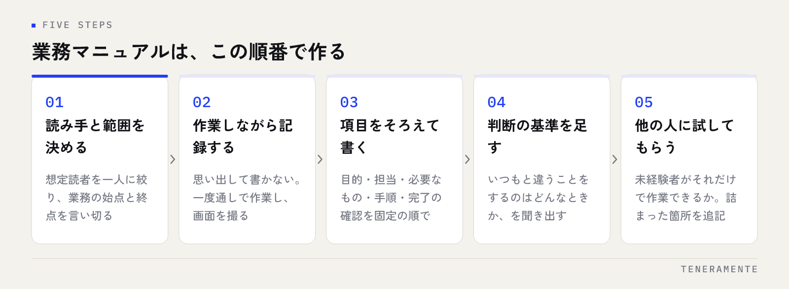

引き継ぎのたびに同じ説明を繰り返している。そう感じたときに作るのが業務マニュアルです。ただ、いきなり書き始めたマニュアルは、たいてい完成しないか、完成しても読まれません。必要なのは文章力ではなく、書く前に決めることと、更新が続く置き方です。
📌 この記事の結論
業務マニュアルは、網羅性ではなく読み手と範囲を先に決めることで使えるものになります。作業の手順だけでなく判断の基準まで書き出すと属人化が外れ、更新の担当と時期を決めておくと陳腐化が止まります。まず1業務、1枚から始めてください。
01マニュアルが読まれない理由は、作り方の順番にある
使われないマニュアルには共通点があります。分厚い、探せない、古い。この3つです。いずれも文章の巧拙ではなく、作り方の順番から生まれます。
最も多いのが、読み手を決めずに書き始めるケースです。初日の新人と、半年経った担当者では、必要な情報がまったく違います。両方に向けて書こうとすると、前提の説明と例外処理が同じ紙に同居し、どちらにとっても読みにくいものになります。
次に多いのが、完璧に仕上げてから公開しようとして、公開されないまま止まるケース。そして、書いた人が異動した瞬間に更新が止まるケースです。マニュアルは書き切ることではなく、更新され続けることで価値が出ます。だから最初から、直しやすい単位で作ります。
02書く前に決める3つのこと
着手前に次の3点を決めてください。ここを飛ばすと、書き直しになります。
ひとつめは読み手です。「入社1日目の人」「異動してきた別部署の人」「月に一度だけこの作業をする人」。一人に絞ります。想定読者が絞れると、どこまで前提を説明すべきかが自動的に決まります。
ふたつめは範囲です。1本のマニュアルが扱う業務を、始点と終点で言い切ります。「請求書の発行から送付まで」のように区切れば、書くべき工程が有限になります。業務全体を1本にまとめようとすると、ほぼ確実に途中で止まります。
みっつめは置き場所です。書き上がったものをどこに置き、どう探すか。これを先に決めないと、書いたのに使われないという結果になります。検索できる場所に、業務名で見つかる名前を付けて置きます。
| 種類 | 読み手 | 書く内容 | 適した分量 |
|---|---|---|---|
| 手順書 | 実際に作業する人 | 画面操作・入力値・順番 | 1作業1枚 |
| 業務マニュアル | その業務を担当する人 | 手順書の集合＋判断の基準 | 業務単位 |
| 業務フロー図 | その業務をやらない人 | 担当と受け渡しの流れ | 1業務1枚 |
先に全体像を整理したい場合は、業務フロー図の書き方から入ると範囲を決めやすくなります。
03マニュアルの作り方は、この5段階で進める
順番どおりに進めれば、文章の得意不得意にかかわらず形になります。

作業を洗い出したら、まず実際にやりながら記録します。頭の中で思い出して書くと、無意識にやっている操作が抜けます。画面のスクリーンショットを撮りながら一度通して作業するのが、最も早く正確です。
下書きができたら、その業務をやったことがない人に、それだけを見て作業してもらいます。詰まった箇所が、説明の足りない箇所です。書いた本人には見つけられません。この一手間が、読まれるマニュアルとそうでないものを分けます。
041本のマニュアルに入れる項目をそろえる
書式がばらばらだと、読む側は毎回どこを見ればいいか探すことになります。項目を固定してください。
- この作業の目的：なぜやるのかを1〜2文。目的が分かると、例外に出会ったときに自分で判断できます
- いつ・誰がやるか：タイミングと担当。月次なのか、依頼を受けたときなのか
- 必要なもの：使うシステム、権限、参照する資料
- 手順：番号付きで、1ステップ1動作。画面があるならスクリーンショットを添える
- 判断が必要な場面と基準：後述します。ここが属人化を外す中心です
- 終わったことの確認方法：何がどうなっていれば完了か
- 困ったときの連絡先：部署名や役割名で書きます（個人名は異動で古くなります）
手順は1ステップ1動作を守ります。「顧客情報を入力して保存し、承認依頼を送る」は3ステップです。まとめると、途中で止まった人が自分の位置を見失います。
05属人化を外すのは、手順ではなく「判断」の記述
ここが最も重要です。引き継ぎがうまくいかない原因は、手順が書かれていないことではありません。手順は書けても、判断の基準が書かれていないことです。
ベテランは「この案件は先に確認を取る」「この金額なら上長承認が要る」といった判断を無意識に行っています。本人にとっては当たり前なので、マニュアルに書く発想が出てきません。結果、手順どおりにやったのに間違えるという状況が生まれます。
判断を引き出すには、聞き方を変えます。「どうやるか」ではなく、**「どういうときに、いつもと違うことをしますか」**と尋ねます。例外の話から入ると、判断の基準が言葉になって出てきます。
書き方の例
「金額が大きい場合は上長に確認」ではなく、「税抜○万円以上は上長承認を取る」と数字で書きます。基準が数字や条件で書けないものは、まだ言語化できていない判断です。その場合は判断した実例を2〜3件並べておくだけでも、次の人の助けになります。
判断の基準が書き出せると、その業務を仕組みに載せられるようになります。条件が明文化されているということは、そのままシステムの分岐条件になるということだからです。
06更新が続く仕組みを、最初にセットで作る
マニュアルは作った瞬間から古くなります。更新の仕組みを本体とセットで用意してください。
- 更新の担当を役割で決める：個人名ではなく「経理担当」のように役割で持たせます
- 見直しの時期を決める：半年に一度など、日付を先に入れておきます
- 最終更新日を先頭に書く：読む側が、情報の鮮度を自分で判断できます
- 直す人を限定しない：気づいた人が直せる場所に置きます。申請が要ると誰も直しません
- 業務が変わった日に直す：システムを入れ替えた、担当が変わった。そのタイミングで手を付けるのが最も確実です
注意
一度に全業務のマニュアルを揃えようとしないでください。担当者の負荷が一気に増え、途中で止まります。止まったマニュアルは「あるのに古い」という、無いより厄介な状態になります。まず引き継ぎ予定のある業務、または特定の一人しかできない業務の1本から始めてください。
07生成AIを下書きに使うときの注意
作業の記録を渡して文章に整えてもらう用途では、生成AIが下書きの時間を大きく縮めます。箇条書きのメモから手順書の形に起こす、書式をそろえる、抜けていそうな項目を洗い出す。このあたりは得意な領域です。
ただし、社内の判断基準や例外処理は、AIが知り得ない情報です。それらしい一般論で埋められてしまうと、間違ったマニュアルが出来上がります。判断の部分は必ず人が書き、AIには形式を整える役割を任せてください。
社内で使う際のルールづくりは生成AIの社内ルールに整理しています。顧客情報や取引先名をそのまま入力しない、といった線引きを先に決めておくと安心して使えます。
マニュアルは動画と文書のどちらがよいですか？
どこから作り始めるべきですか？
作る時間が取れません。どうすればよいですか？
08まとめ：マニュアルは、仕組み化の下ごしらえになる
業務マニュアルの作り方は、読み手・範囲・置き場所を決め、実際にやりながら記録し、他の人に試してもらい、判断の基準まで書き出す。この順番です。属人化を外す鍵は手順ではなく判断の記述にあり、更新の担当と時期を決めておけば陳腐化も止まります。
そして、判断の基準まで書けた業務は、そのままシステムに載せられます。誰が・いつ・どの条件で何をするかが明文化されていれば、入力や転記、承認の流れを仕組みに置き換える検討に進めるからです。マニュアルを作る作業は、そのための下ごしらえでもあります。
TENERAMENTEでは、業務の棚卸しから一緒に進める形で業務アプリ開発をお引き受けしています。マニュアルが手書きのメモの段階でも構いません。特定の一人しかできない業務が残っていて仕組みにしたいとお考えでしたら、お問い合わせからご相談ください。